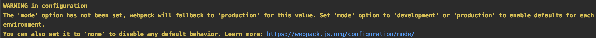

POSTS
Webpack入门
什么是webpack？
- 本质上，webpack 是一个现代 JavaScript 应用程序的静态模块打包器(module bundler)。当 webpack 处理应用程序时，它会递归地构建一个依赖关系图(dependency graph)，其中包含应用程序需要的每个模块，然后将所有这些模块打包成一个或多个 bundle。
开始使用webpack
webpack的安装分全局安装和本地安装
本地安装
mkdir webpack-demo cd webpack-demo npm init -y npm install webpack webpack-cli --save-dev全局安装
npm install --global webpack
配置configuration
现在package.json中的script内加入以下代码
"build": "rm -rf dist && webpack",用途:每次都可以通过yarn build来打包
但是运行webpack时会出现如下警告

创建一个webpack.config.js
然后在webpack.config.js内写入以下代码
const path = require('path'); module.exports = { mode: "production", }其中mode内可以填入 “production” 或 “development”
production是以生产模式打包，所生成的js代码无注释
development是以开发模式打包，所生成的js代码有注释
创建entry和output
const path = require('path'); module.exports = { entry: './src/index.js', output: { filename: 'main.[contenthash].js', path: path.resolve(__dirname, 'dist') } };
其中entry是用于以属性内路径的文件来打包js文件
output是指输出的文件
filename是打包后的文件名字，其中的[contenthash]是为文件名后产生一个哈希值，在文件更新之后，这个哈希会变换，用于Http缓存，在本例中的文件名应该类似与main.da5570c26dca03d185a0.js
path是输出文件的路径
用webpack生成HTML
安装
npm install --save-dev html-webpack-plugin使用方法
const HtmlWebpackPlugin = require('html-webpack-plugin'); const path = require('path'); module.exports = { entry: 'index.js', output: { path: path.resolve(__dirname, './dist'), filename: 'main.[contenthash].js' }, plugins: [new HtmlWebpackPlugin()] };在webpack.config.js中写入以上代码后，运行yarn build可以得到名为index.html的文件，内容如下
<!DOCTYPE html> <html> <head> <meta charset="utf-8"> <title>Webpack App</title> <meta name="viewport" content="width=device-width, initial-scale=1"></head> <body> <script src="main.da5570c26dca03d185a0.js"></script> </body> </html>如何更改html的名字以及内容？
在webpack.config.js中写入以下代码
plugins: [ new HtmlWebpackPlugin({ title: 'Custom template', // Load a custom template (lodash by default) template: 'src/index.html' }) ]在src/index.html中写入
<!DOCTYPE html> <html> <head> <meta charset="utf-8"/> <title><%= htmlWebpackPlugin.options.title %></title> </head> <body> <div class="app"> <p>great</p> </div> </body> </html>再次运行yarn build可以得到名为Custom template的html文件 其内容为src/index.html的内容
使用CSS
安装
npm install --save-dev css-loader npm install --save-dev style-loader如何使用？
在index.js中写入
import css from 'file.css';然后再webpack.config.js中写入以下代码
module.exports = { module: { rules: [ { test: /\.css$/i, use: ['style-loader', 'css-loader'], }, ], }, };
使用webpack dev server
安装
npm install --save-dev webpack-dev-server如何使用？
在webpack.config.js中的module.export内写入以下代码
devtool: 'inline-source-map', devServer: { contentBase: './dist', },然后在package.json中添加命令
"start": "webpack-dev-server --open",执行yarn start既可以执行webpack server
webpack CSS抽成文件
安装
npm install --save-dev mini-css-extract-plugin使用
在webpack.json里写入以下代码
module: { rules: [ { test: /\.css$/, use: [ { loader: MiniCssExtractPlugin.loader, options: { publicPath: '/public/path/to/', }, }, 'css-loader', ], }, ], },plugins: [ new MiniCssExtractPlugin({ filename: '[name].[contenthash].css', chunkFilename: '[id].[contenthash].css', }), ],